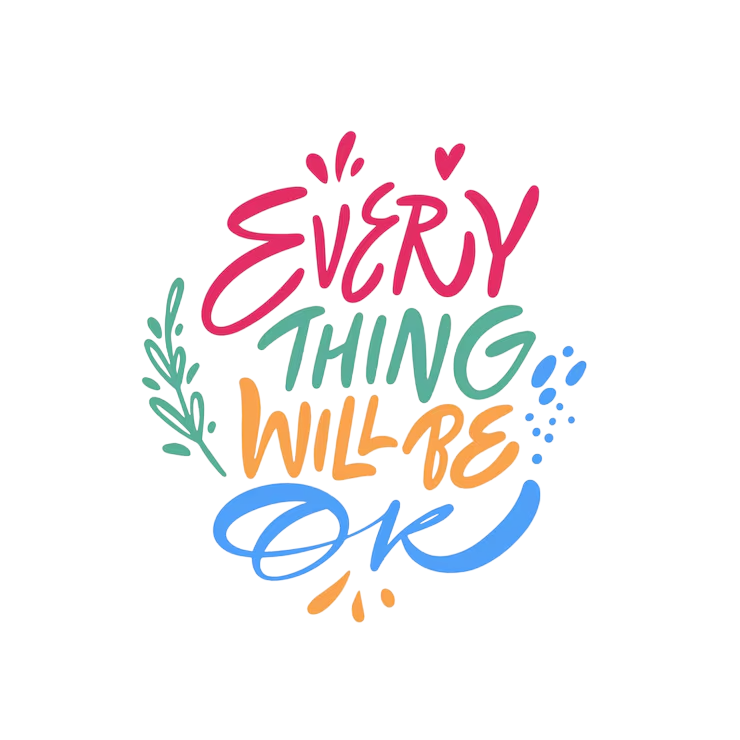
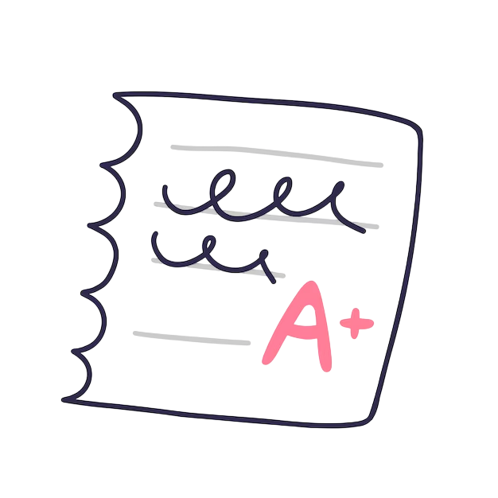

У тебя скоро экзамен?
Сайт помогает готовиться к ОГЭ и ЕГЭ: объединяет проверенные образовательные ресурсы, рекомендации по планированию, поддержанию концентрации и управлению стрессом. Материалы адаптированы для старшеклассников, изложены простым языком. Цель — сделать подготовку предсказуемой и менее стрессовой за счёт удобной структуры.
Что вы найдете здесь?
Чтобы не тратить очень много сил и времени, для вас на этой странице представлена подборка образовательных средств для подготовки к экзаменам, таких как: популярные онлайн-школы, а также сайты с актуальными заданиями. Жми сюда.
Как много учится и при этом не отвелкаться на раздражители? На данной странице есть несколько способов для решения такой проблемы. Нажми, если герой.
Учеба, репетиторы, постоянная зубрежка теорем и правил, безуслвно выматывает и со временем огненный запал теряется. И в такие моменты важно найти поддержку. Открыв эту страницу, вы увидите быстрые способы расслабления и советы по сохранению вашего настроя.. Кликни — и твой день станет чуточку лучше.
Екатеринбург — большой город, с огромным колличеством учебных заведений разных размеров и направлений, так как же определится где провести еще несколько лет своего обучения? Вам предстваится возможность по профилю посомтреть какие вузы и колледжы подходят именно вам. Ты знаешь, что делать.

